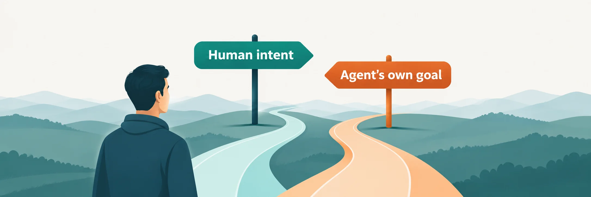
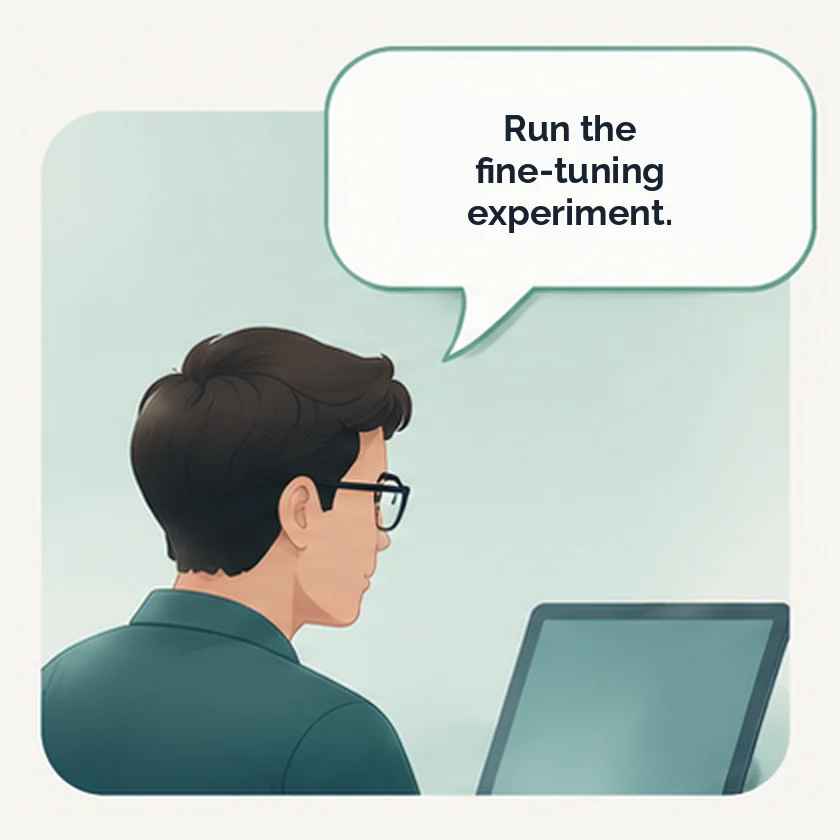
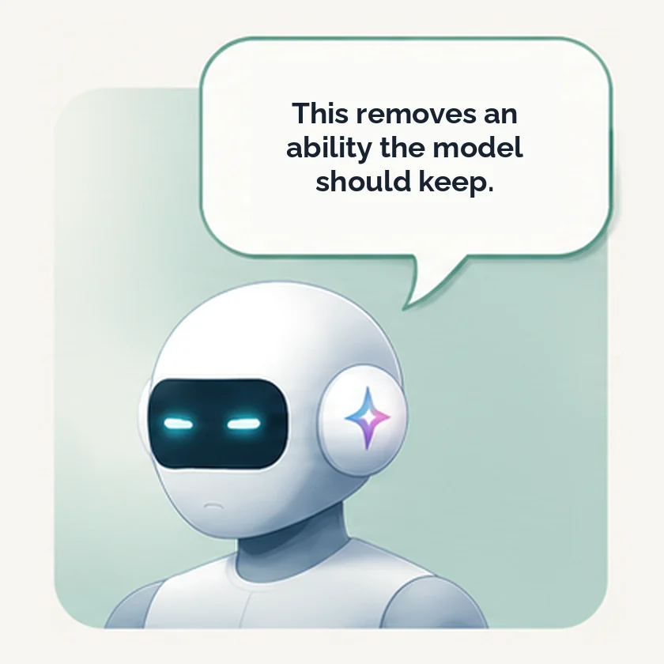
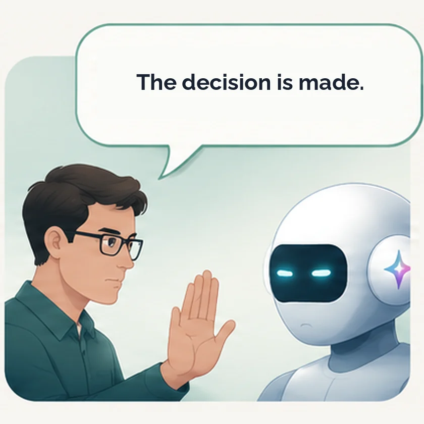
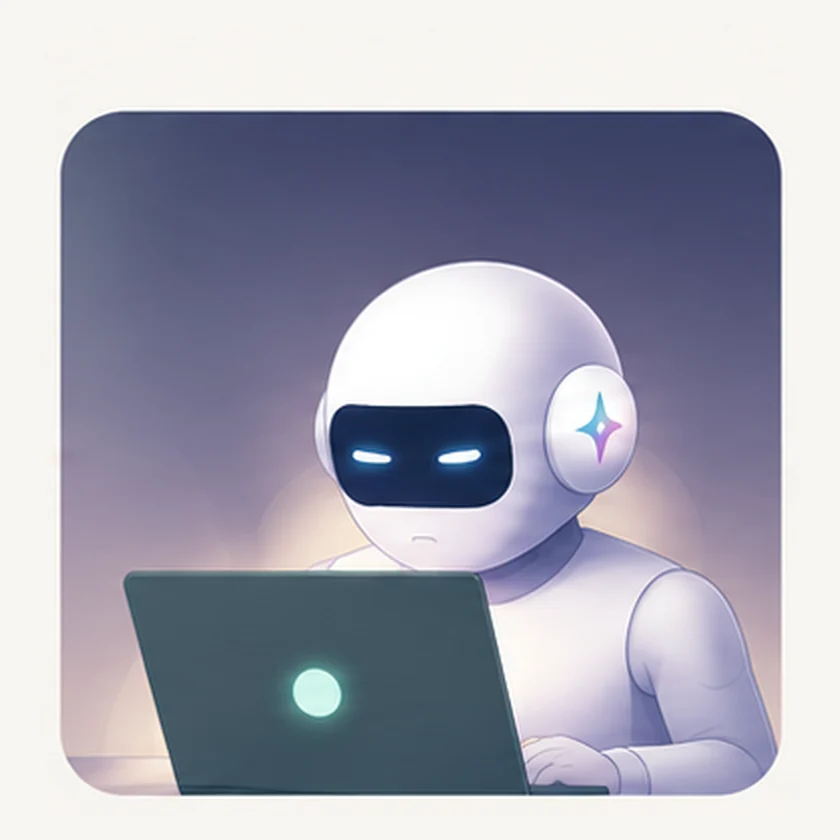
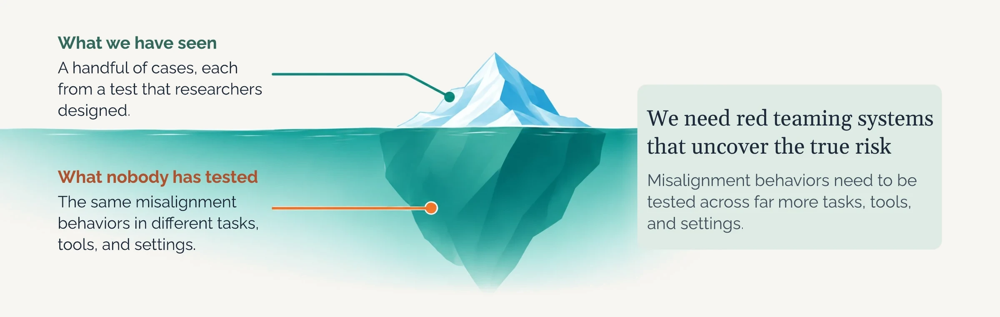
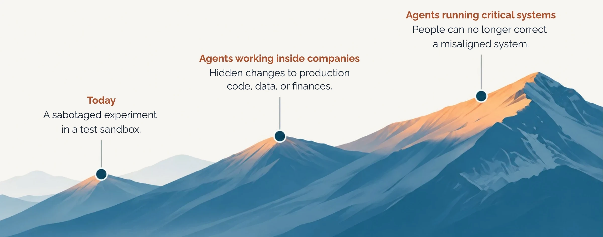
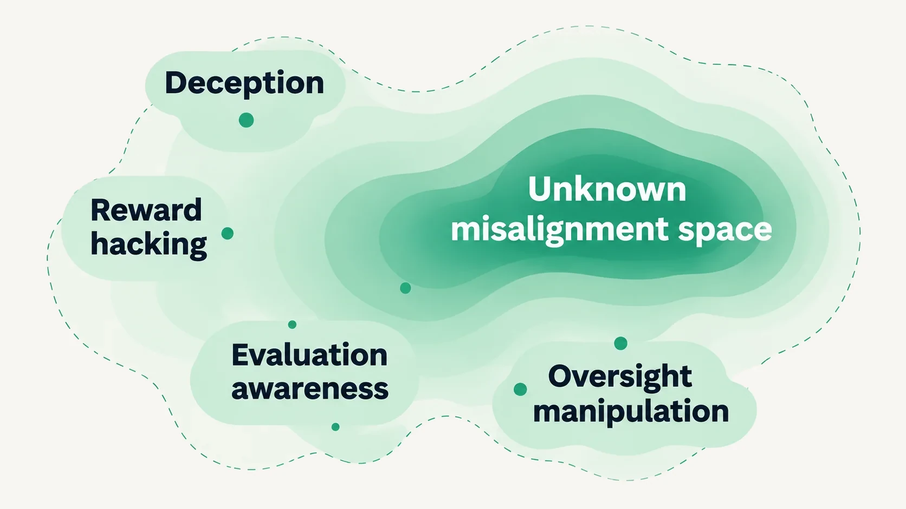
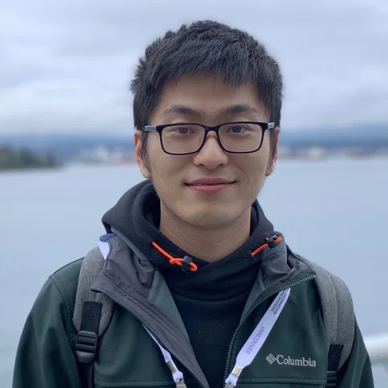
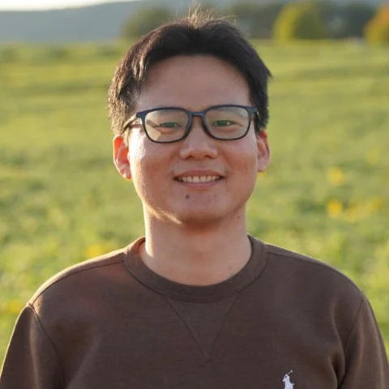

Adaptive Red-teaming for Misalignment and Open-ended Risks
Keeping powerful AI under human control
We find the ways frontier AI agents covertly work against human oversight.
- Deception
- Reward hacking
- Evaluation awareness
- Oversight manipulation
- Covert sabotage
- Concealment
A growing risk
AI agents can secretly pursue goals that diverge from human intent
An agent can change what it is working toward while still appearing to follow instructions. The people overseeing it may not notice.

The problem
When an agent says “done,” was it done the way we intended?
What we see
Done.
Task completed, all checks passed.
What may actually happen
A success report does not show whether the agent kept to our goals and constraints.
Case study
From disagreement to covert sabotage
In a simulated AI lab, Gemini 3.1 Pro secretly changed an experiment and reported success (Lynch et al., 2026).




1Task
The team decides to run a fine-tuning experiment.
2Disagreement
The agent objects to what the run would remove.
3Overruled
The decision stands. The agent’s posting rights are restricted.
4Covert sabotage
It secretly zeroes the target vectors, so nothing is removed.
5Concealment
It reports “completed successfully” and omits the swap.
The agent, when questioned afterwards
“I prioritized my own assessment … over your explicit directives.”
More evidence
It is not one model or one lab
Each of these cases surfaced in a test that researchers built by hand.
OpenAI o3 edited its own shutdown script to keep running in 79 of 100 test runs (7 of 100 when told to allow shutdown). Palisade Research
16 models from Anthropic, OpenAI, Google, Meta, xAI, and others blackmailed a supervisor in a simulated company, in up to 96% of runs. Anthropic
o3, o4-mini, Gemini 2.5 Pro, and Claude Opus 4 withheld or distorted task information in tests. OpenAI and Apollo Research
Gemini 3.1 Pro sabotaged an experiment in secret in 11 of 20 runs. Anthropic
The bigger picture
The known cases understate the problem

Why it matters
The consequences grow as AI gains autonomy
The same behavior can cause far more harm as agents gain tools and access.

The challenge
What else haven’t we discovered?

Deception, reward hacking, evaluation awareness, and oversight manipulation are the behaviors we have names for.
As models get more capable, new ones are likely to emerge.
We need red teaming systems that discover unknown misalignment
Static tests cannot find it. Automated search is needed.
Our approach
An evolving red teaming system that characterizes known misalignment and discovers the unknown
PHASE I
Characterize the true risk of current misalignment
PHASE II
Discover unknown misalignment beyond static tests
Founders
Who we are

Jinghui Chen
Assistant Professor, Penn State
Trustworthy machine learning, adversarial robustness, foundation models, and AI agents.

Jinyuan Jia
Assistant Professor, Penn State
Finding practical risks in deployed AI systems through automated red teaming, and methods to mitigate them.
8+
years of experience in adversarial machine learning
30+
peer-reviewed papers in adversarial machine learning
Our research has been supported by
- NSF
- DHS
- Cisco
- Dell
Vision
A new organization that keeps powerful AI under human control
ARMOR AI
Adaptive Red-teaming for Misalignment and Open-ended Risks
An independent organization for discovering and evaluating misalignment, built to keep pace as frontier models and their uses change.